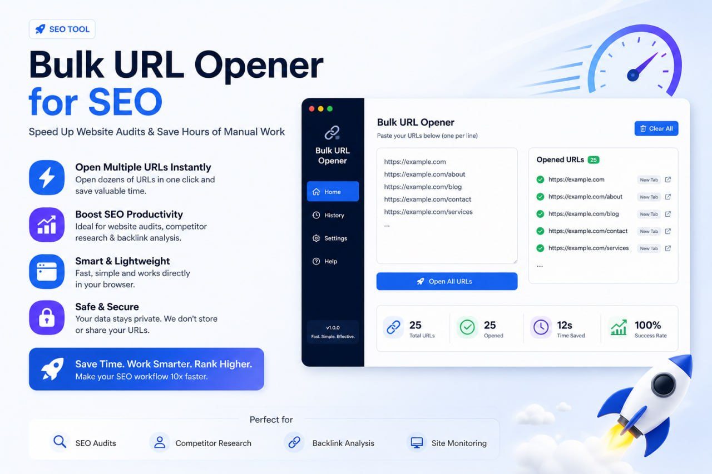

- When people talk about SEO audits, they usually focus on checklists — titles, meta tags, internal links, and so on. But very few talk about something that actually affects your work every single day: how long the process takes.
- If you’ve tried auditing even a medium-sized website, you’ll know what happens. You gather URLs, start opening them one by one, and within 15–20 minutes, the process starts feeling slow and repetitive. Not difficult — just unnecessarily time-consuming.
- That’s where a Bulk URL Opener quietly changes things.
- It’s not a “growth hack” or some advanced SEO trick. It’s just a smarter way to handle something you’re already doing — opening and reviewing multiple pages.
Why SEO Audits Feel Slower Than They Should
- Most of the delay in audits doesn’t come from analysis. It comes from small actions repeated again and again.
- Opening a page. Waiting. Checking it. Going back. Opening the next one.
- Do that 25 times, and it adds up.
- The bigger issue is that this kind of workflow breaks your concentration. By the time you reach the last few pages, you’re not really analyzing — you’re just trying to finish.
- This is why even simple audits sometimes feel exhausting.
What Changes When You Use a Bulk URL Opener
A Bulk URL Opener lets you paste a list of links and open them all at once in separate tabs.
Simple feature. But the impact is noticeable.
Instead of handling pages one by one, you suddenly have everything in front of you. You can move between tabs quickly, compare things without thinking too much, and stay in the flow.
It doesn’t just save time — it makes the work feel smoother.
A Quick Example (Realistic Scenario)
Let’s say you have 12 blog posts to review.
Normally, you’d open each one separately and check them. With a Bulk URL Opener, you paste all 12 links and open them together.
Now, instead of jumping back and forth, you just move from one tab to the next.
While doing that, you start noticing patterns almost automatically.
Maybe some titles are written well, while others feel generic. Some posts have clean structure, while others look messy. You don’t have to force this comparison — it just happens because everything is in front of you.
That’s the difference.
Where This Actually Helps in SEO Work
One of the most useful applications is during on-page checks.
When multiple pages are open, it becomes easier to spot inconsistencies in headings, content structure, or formatting. You don’t have to remember what the previous page looked like — it’s right there.
The same applies to competitor research. If you’re analyzing search results, opening top-ranking pages together gives you a much clearer idea of what’s working. You can quickly scan structure, depth, and style without wasting time switching tabs manually.
Internal linking is another area where this helps. Instead of randomly checking a few pages, you can open a group of URLs and see how they connect. It gives you a better sense of your site structure.
A Small Habit That Makes It More Effective
Just opening URLs in bulk isn’t enough. The way you use it matters.
One thing that helps is working in small batches. Opening 10–15 pages at once is manageable. More than that, and it starts getting messy.
Another simple habit is deciding what you’re checking before you start. For example, one round just for titles, another for structure, and another for content quality.
This keeps things focused and prevents you from jumping between tasks.
When This Approach Doesn’t Work Well
It’s not a tool for everything.
If you’re doing a deep technical audit or analyzing one important page in detail, opening multiple tabs won’t help much. In those cases, focused attention is better.
Bulk opening works best when you need a quick, comparative view across multiple pages.
Run your next audit batch in seconds
Paste links or import your spreadsheet, remove duplicates and launch them all at once.
Where Your Tool Comes In
If you’ve built a Bulk URL Opener, this is exactly the kind of situation it’s meant for.
People don’t need a complicated interface here. They just want something that works instantly — paste links, open them, and get on with their work.
If your tool does that reliably, it already solves a real problem.
The key is not to push it aggressively, but to show how it fits naturally into a workflow like this.
Why This Actually Matters
Saving a few minutes might not sound like a big deal at first.
But if you’re regularly working with content, audits, or research, those minutes add up. More importantly, your work becomes less tiring and more consistent.
And in SEO, consistency matters more than speed alone.
Final Thoughts
- There’s nothing complicated about a Bulk URL Opener. It doesn’t replace your SEO knowledge or tools.
- But it does remove a small, annoying bottleneck that slows you down more than you realize.
- And sometimes, that’s exactly what you need — not a new strategy, just a better way to do the work you’re already doing.
Quick Questions
Is this only useful for SEO professionals?
Not really. Anyone who works with multiple links — students, researchers, writers, and marketers — can benefit from it.
How many links should you open at once?
Around 10–15 works best for most setups and provides a good balance between efficiency and browser performance.
Does it improve rankings directly?
No. A Bulk URL Opener does not directly affect rankings, but it helps you work more efficiently, which can lead to better optimization over time.